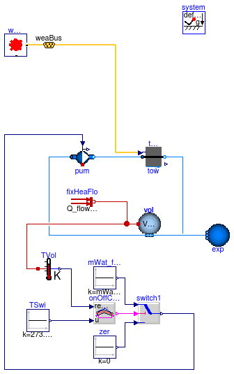
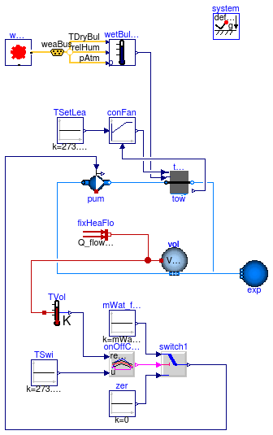

This package contains examples for the use of models that can be found in Buildings.Fluid.HeatExchangers.CoolingTowers.
Extends from Modelica.Icons.ExamplesPackage (Icon for packages containing runnable examples).
| Name | Description |
|---|---|
| FixedApproachDryBulb | Test model for cooling tower with fixed approach temperature using the dry-bulb temperature |
| FixedApproachWetBulb | Test model for cooling tower with fixed approach temperature using the wet-bulb temperature |
| YorkCalc | Test model for cooling tower using the York performance correlation |
| BaseClasses | Package with base classes for Buildings.Fluid.HeatExchangers.CoolingTowers.Examples |
 Buildings.Fluid.HeatExchangers.CoolingTowers.Examples.FixedApproachDryBulb
Buildings.Fluid.HeatExchangers.CoolingTowers.Examples.FixedApproachDryBulb
vol. An on/off controller
switches the cooling loop water pump on or off based on the temperature of
this volume.
The cooling tower outlet temperature has a fixed approach temperature to the
outdoor dry-bulb temperature.
Extends from Modelica.Icons.Example (Icon for runnable examples), Buildings.Fluid.HeatExchangers.CoolingTowers.Examples.BaseClasses.PartialStaticTwoPortCoolingTower (Base class for test models of cooling towers).
| Type | Name | Default | Description |
|---|---|---|---|
| Nominal condition | |||
| MassFlowRate | mWat_flow_nominal | 0.5 | Design air flow rate [kg/s] |
| Type | Name | Description |
|---|---|---|
| Bus | weaBus |
model FixedApproachDryBulb
"Test model for cooling tower with fixed approach temperature using the dry-bulb temperature"
extends Modelica.Icons.Example;
extends Buildings.Fluid.HeatExchangers.CoolingTowers.Examples.BaseClasses.PartialStaticTwoPortCoolingTower
(
redeclare Buildings.Fluid.HeatExchangers.CoolingTowers.FixedApproach tow);
equation
connect(weaBus.TDryBul, tow.TAir);
end FixedApproachDryBulb;
Buildings.Fluid.HeatExchangers.CoolingTowers.Examples.FixedApproachWetBulb

vol. An on/off controller
switches the cooling loop water pump on or off based on the temperature of
this volume.
The cooling tower outlet temperature has a fixed approach temperature to the
outdoor wet-bulb temperature.
Extends from Modelica.Icons.Example (Icon for runnable examples), Buildings.Fluid.HeatExchangers.CoolingTowers.Examples.BaseClasses.PartialStaticTwoPortCoolingTowerWetBulb (Partial test model for cooling tower with wet bulb temperature as potential for heat transfer).
| Type | Name | Default | Description |
|---|---|---|---|
| Nominal condition | |||
| MassFlowRate | mWat_flow_nominal | 0.5 | Design air flow rate [kg/s] |
| Type | Name | Description |
|---|---|---|
| Bus | weaBus |
model FixedApproachWetBulb
"Test model for cooling tower with fixed approach temperature using the wet-bulb temperature"
extends Modelica.Icons.Example;
extends Buildings.Fluid.HeatExchangers.CoolingTowers.Examples.BaseClasses.PartialStaticTwoPortCoolingTowerWetBulb
(
redeclare FixedApproach tow);
equation
connect(wetBulTem.TWetBul, tow.TAir);
end FixedApproachWetBulb;
Buildings.Fluid.HeatExchangers.CoolingTowers.Examples.YorkCalc
vol. An on/off controller
switches the cooling loop water pump on or off based on the temperature of
this volume.
The cooling tower outlet temperature is controlled to track a fixed temperature.
Extends from Modelica.Icons.Example (Icon for runnable examples), Buildings.Fluid.HeatExchangers.CoolingTowers.Examples.BaseClasses.PartialStaticTwoPortCoolingTowerWetBulb (Partial test model for cooling tower with wet bulb temperature as potential for heat transfer).
| Type | Name | Default | Description |
|---|---|---|---|
| Nominal condition | |||
| MassFlowRate | mWat_flow_nominal | 0.5 | Design air flow rate [kg/s] |
| Type | Name | Description |
|---|---|---|
| Bus | weaBus |
model YorkCalc
"Test model for cooling tower using the York performance correlation"
extends Modelica.Icons.Example;
extends Buildings.Fluid.HeatExchangers.CoolingTowers.Examples.BaseClasses.PartialStaticTwoPortCoolingTowerWetBulb
(
redeclare Buildings.Fluid.HeatExchangers.CoolingTowers.YorkCalc tow,
onOffController(bandwidth=2));
Modelica.Blocks.Sources.Constant TSetLea(k=273.15 + 18)
"Setpoint for leaving temperature";
Controls.Continuous.LimPID conFan(
k=1,
Ti=60,
Td=10,
reverseAction=true) "Controller for tower fan";
equation
connect(wetBulTem.TWetBul, tow.TAir);
connect(TSetLea.y, conFan.u_s);
connect(conFan.y, tow.y);
connect(tow.TLvg, conFan.u_m);
end YorkCalc;